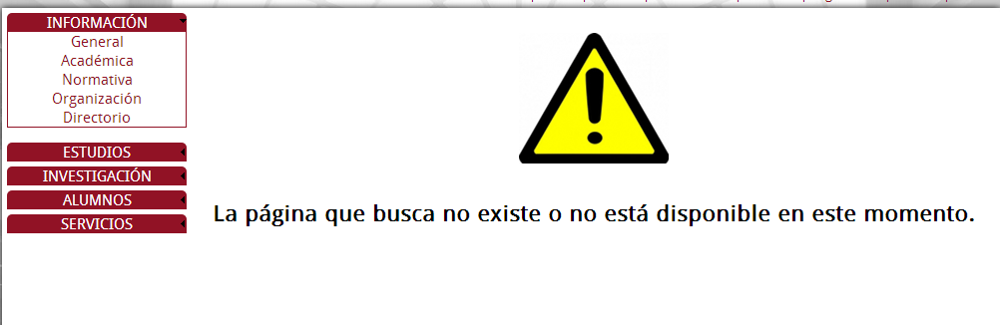
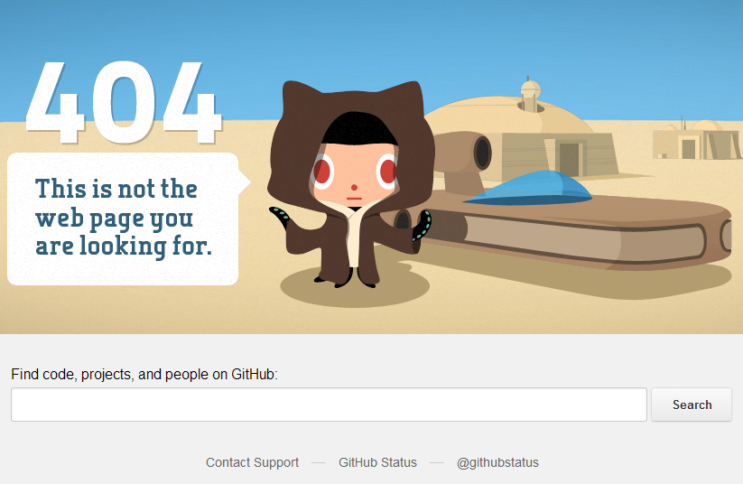
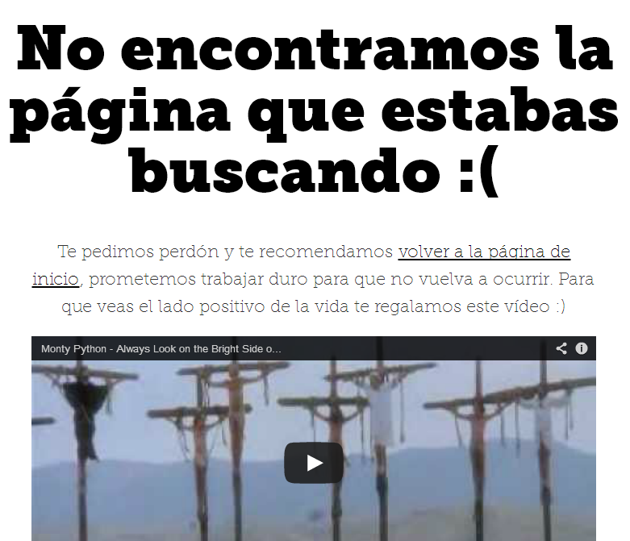

Errores 404
Un error 404 es un error, y como tal viene provocado por un comportamiento no esperado de nuestra web. Esto provoca que un usuario no haya sido capaz de encontrar el contenido que desea, bien sea por un cambio en la estructura de la web o por un enlace mal escrito.
¿Qué significa? Que nuestro usuario está perdido y que debemos de ayudarle.
Patada en la...
También podemos pegarle una patada a la experiencia de usuario (siempre tenemos esa opción) mostrando el siguiente error:

Error 404 de la web de mi Universidad
Por si fuera poco, el error es suyo. Esta web ha sido modificada recientemente cambiando todas las URL y sin dar re-direccionamiento a las anteriores. Como consecuencia todo enlace de otras webs y buscadores nos trae hasta esta maravilla de aviso 404.
No solo no ayuda de ninguna manera al usuario sino que asocia este error con algo tan negativo como una señal de peligro. ¿Qué peligro tenemos aquí? Una mala asociación de conceptos provoca una muy mala experiencia de usuario: estamos ante un error, pero nada más allá que no encontrar un fichero.
... entrepierna
Si queremos que a la UX de nuestra web no le duela esta parte tan sensible debemos de evitar los errores 404 en la medida de lo posible y gestionarlos de manera correcta cuando ocurren.
Ante un error 404, podemos avisar al usuario por qué ha sido provocado el error, introducirle alguna "cuña" como un vídeo, caricatura... que quite importancia a este, explicarle como encontrar contenido en la web o incluso ofrecerle otros enlaces que podrían ser su destino. Todas estas son posibilidades totalmente válidas y que mejoran la experiencia del usuario.
Os dejo dos ejemplos que gestionan bien los errores 404:

Error 404 Github

Error 404 UXMAD